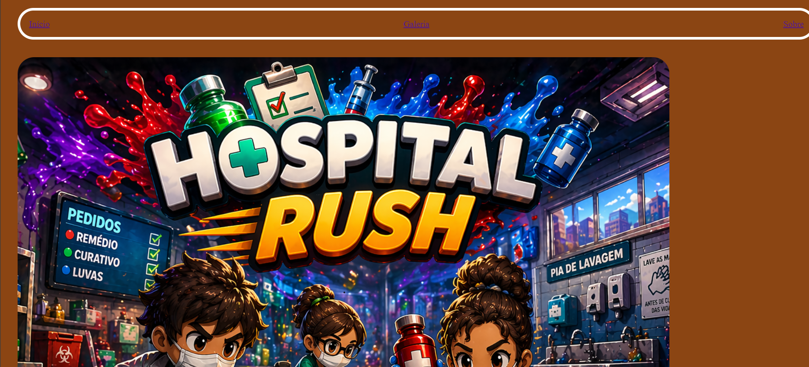

Tempo apertado
Fases com ritmo acelerado que exigem decisões rápidas e foco constante.
Prepare kits, atenda pacientes e vença o relógio em uma corrida cooperativa de ação hospitalar.


Fases com ritmo acelerado que exigem decisões rápidas e foco constante.
Combine itens e monte equipamentos médicos antes que o paciente perca tempo.
Trabalhe em equipe para coordenar entregas e vencer os desafios juntos.

HospitalRush é um jogo cooperativo desenvolvido em Pygame com foco em ação rápida, coordenação e pressão de tempo.
Monte kits, use equipamentos especiais e entregue as peças certas antes que o relógio acabe.
Perfeito para quem curte jogos de overcooked com tema hospitalar.
Monte rapidamente o kit médico certo para cada paciente.
Corra pelo hospital e entregue antes que o relógio zere.
Combine ações e coopere para vencer fases mais difíceis.